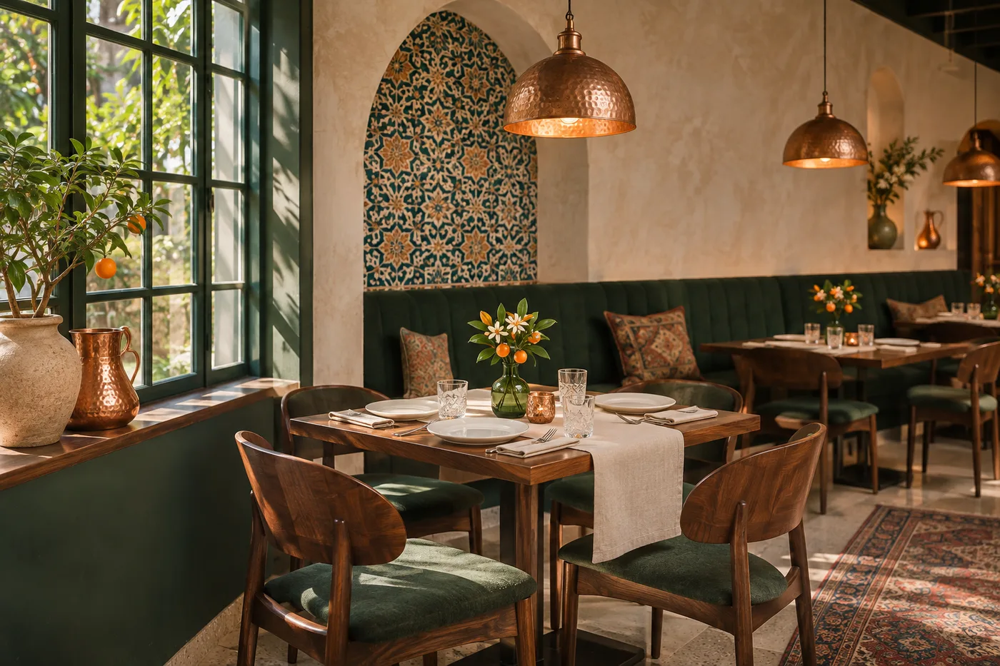
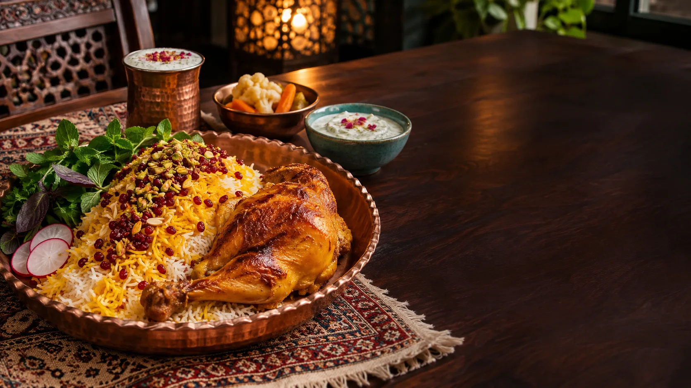
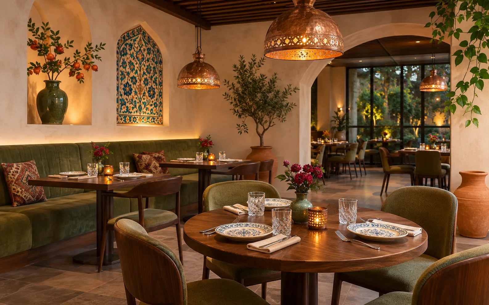

نور آرام
نوری که فضا را گرم نگه دارد و برای یک گفتوگوی طولانی دلنشین باشد.
در حالوهوای نارنج
فضای نارنج از دورهمیهای ایرانی الهام میگیرد؛ از نور گرم و سفرههای رنگین تا لحظههایی که با گفتوگو و یک غذای دوستداشتنی کامل میشوند.

نارنجمیزبانی ایرانیالهام از دورهمیهای ایرانیجزئیات فضا
این صفحه حالوهوای پیشنهادی نارنج را با سه ایدهٔ ساده روایت میکند.
نوری که فضا را گرم نگه دارد و برای یک گفتوگوی طولانی دلنشین باشد.
ترکیبی از میزهای مرتب و فاصلهای راحت برای دیدارهای دونفره و جمعی.
رنگها و جزئیاتی که از نقشمایهها و مهماننوازی ایرانی الهام میگیرند.

روی میز نارنج
فضای یک رستوران وقتی کامل میشود که طعم غذا، آرامش میز و همراهی آدمها در یک قاب قرار بگیرند.
آشنایی با منوقابهایی از نارنج
جزئیات فضا در کنار طعم غذا، حالوهوای یک دیدار را میسازند.

فضایی گرم برای مکث، گفتوگو و لذت بردن از یک وعدهٔ خوب.
تصاویر این صفحه برای نمایش فضای پیشنهادی استفاده شدهاند و ممکن است با فضای نهایی رستوران تفاوت داشته باشند.
طعم در کنار فضا
چند پیشنهاد از سفرهٔ ایرانی نارنج را ببینید.